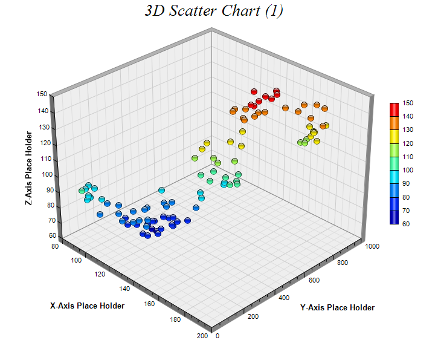

This example demonstrates the basic steps in creating 3D scatter charts.
The following is the command line version of the code in "cppdemo/threedscatter". The MFC version of the code is in "mfcdemo/mfcdemo". The Qt Widgets version of the code is in "qtdemo/qtdemo". The QML/Qt Quick version of the code is in "qmldemo/qmldemo".
#include "chartdir.h"
int main(int argc, char *argv[])
{
// The XYZ data for the 3D scatter chart as 3 random data series
RanSeries* r = new RanSeries(0);
DoubleArray xData = r->getSeries(100, 100, -10, 10);
DoubleArray yData = r->getSeries(100, 0, 0, 20);
DoubleArray zData = r->getSeries(100, 100, -10, 10);
// Create a ThreeDScatterChart object of size 720 x 600 pixels
ThreeDScatterChart* c = new ThreeDScatterChart(720, 600);
// Add a title to the chart using 20 points Times New Roman Italic font
c->addTitle("3D Scatter Chart (1) ", "Times New Roman Italic", 20);
// Set the center of the plot region at (350, 280), and set width x depth x height to 360 x 360
// x 270 pixels
c->setPlotRegion(350, 280, 360, 360, 270);
// Add a scatter group to the chart using 11 pixels glass sphere symbols, in which the color
// depends on the z value of the symbol
c->addScatterGroup(xData, yData, zData, "", Chart::GlassSphere2Shape, 11, Chart::SameAsMainColor
);
// Add a color axis (the legend) in which the left center is anchored at (645, 270). Set the
// length to 200 pixels and the labels on the right side.
c->setColorAxis(645, 270, Chart::Left, 200, Chart::Right);
// Set the x, y and z axis titles using 10 points Arial Bold font
c->xAxis()->setTitle("X-Axis Place Holder", "Arial Bold", 10);
c->yAxis()->setTitle("Y-Axis Place Holder", "Arial Bold", 10);
c->zAxis()->setTitle("Z-Axis Place Holder", "Arial Bold", 10);
// Output the chart
c->makeChart("threedscatter.png");
//free up resources
delete r;
delete c;
return 0;
}
© 2023 Advanced Software Engineering Limited. All rights reserved.